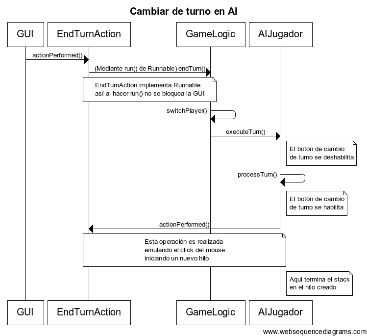

GeoMago
Índice
- Introducción
- Concepto
- Reglas del juego
- Análisis
- Solución
- Casos de uso
- Arquitectura
- Gráficos de clases
- Gráficos de secuencia
- Dificultades
- Prueba de uso
- Instrucciones de uso
- Compilación y ejecución
- Comenzar un nuevo juego
- Otros
Introducción
En búsqueda de satisfacer nuestro tiempo libre o de ocio en alguna actividad fue que creamos un nuevo juego de mesa llamado GeoMago. Este juego se inspira en el ajedrez pero agregando nuevas reglas y dificultades dandole un toque original. El juego requiere un mínimo de 2 jugadores y pueden jugar hasta 4 personas. Cada jugador parte con 10 piezas, cada una con su característica especial que lo define, y debe eliminar las piezas de los contrincantes "comiéndolas" con las suyas. Gana el último jugador con piezas restantes.
Reglas del juego:
-
Objetivo: Eliminar las piezas del contrincante.
- Cantidad de jugadores: 2 a 4.
- Piezas:
- Cada jugador posee 10 piezas iniciales:
- 2 pentágonos.
- 3 triángulos.
- 5 círculos.
- Cada pieza tiene un máximo de movimientos según lados que tenga:
- Círculo: 1 movimiento.
- Triángulo: 3 movimientos.
- Pentágono: 5 movimientos.
- Las piezas recuperan 1 movimiento consumido cada turno.
- Una pieza es eliminada del juego cuando una pieza contrincante ocupa su espacio (cuando una pieza "come" a otra).
- Turnos:
- Un turno para cada jugador en cada ronda.
- El turno finaliza cuando el jugador lo desee o al no tener más movimientos disponibles en sus piezas.
- Tablero:
- Celdas blancas son de libre acceso.
- Celdas negras son inaccesibles por las piezas (obstáculos).
-
Fin del juego: Finaliza al haber un solo jugador restante con piezas. En caso de pasar más de 50 turnos el juego termina en empate.
Análisis
Nuestra solución se basa principalmente en 4 tipos de objetos:
-
Ventana principal: Se preocupa de unir todos los elementos del juego.
-
Lógica del juego: Motor del juego.
-
Piezas: Se definen las habilidades de cada pieza y como interactúan.
-
Tablero: Define las características de cuadro del tablero como también de su tamaño.
Por supuesto que cada una de estos tipos contiene uno más objetos para el funcionamiento del juego.
La combinación de estos elementos es lo que permite el funcionamiento del juego, en donde el único elemento externo al sistema es el o los jugadores humanos que deseen jugar. En caso de haber un solo jugador humano, esta disponible la modalidad de jugar contra el computador ya que se implemento una unidad de IA en el juego.
Por como se define el juego hay distintas formas de "usarlo" dependiendo de la cantidad de jugadores.
A continuación se presentan los casos usuales de 2 jugadores:
- Desafiar IA
-
Propósito: Vencer la inteligencia artificial del juego.
-
Actores: Jugador humano y jugador IA.
-
Pre-Condiciones: Ejecutar el juego.
-
Evento: Nuevo juego con 2 jugadores, uno jugador humano.
-
Pos-Condiciones: Finaliza el juego.
-
Tipo: Manual, un turno por jugador.
- Desafiar otro jugador
-
Propósito: Vencer a otra jugador humano.
-
Actores: Dos jugadores humanos.
-
Pre-Condiciones: Ejecutar el juego.
-
Evento: Nuevo juego con 2 jugadores humanos.
-
Pos-Condiciones: Finaliza el juego.
-
Tipo: Manual, un turno por jugador.
- Oberservar juego
-
Propósito: Recreativo, conocer la mecánica del juego.
-
Actores: Dos jugadores IA.
-
Pre-Condiciones: Ejecutar el juego.
-
Evento: Nuevo juego con 2 jugadores IA.
-
Pos-Condiciones: Finaliza el juego.
-
Tipo: Automático, un turno por jugador.
Los tres modos tienen su atractivo para ser empleados. El primero en caso de uno encontrarse solo y querer comprobar las habilidades de uno con el computador, el segundo en caso de querer desafiar algún amigo y el tercero simplemente con el fin de distraerse y ver como se lleva acabo un "partido".
Arquitectura
La arquitectura de la aplicación se basa en tres principios fundamentales:
- Uso de Modelo - Vista - Controlador como base del diseño del programa.
- Trabajo Multi-hilo para evitar que procesos bloqueen la GUI.
- Esquema de herencia para las piezas y los jugadores.
A continuación se presentan distintos gráficos UML que muestran la interacción entre las distintas clases que componen el juego de manera que se entienda su estructura e implementación.
A continuación se presenta el diagrama de secuencia que usa la AI para cambiar de turno:

Dificultades
Durante el desarrollo del proyecto se presentaron algunas dificultades, a continuación se listan algunas de ellas:
-
Desarrollo de una IA: Además de la planificación de turno (comportamiento), estaba el problema de como hacer que ésta no generara un stack overflow al interactuar con otras AI (ver diagrama).
-
Dibujar las distintas piezas: Era necesario definir polígonos no previamente establecidos.
-
Evitar bloqueos de GUI: Mediante hilos se logró evitar instancias donde la GUI queda bloqueada por una operación en ejecución. Esto nos resultó más difícil de lo que pensabamos.
-
Reproducir sonidos más de una vez: La API básica de Java complica el uso de un clip de audio tomado desde un buffer al no permitir rebobinarlo y reproducirlo sin pedir un AudioInputStream nuevo.
Bugs conocidos
- Actualmente el JAR generado por el Makefile no reproduce sonido. Si se importa el proyecto en Eclipse y se construye ahi se pueden escuchar los movimientos de las piezas.
Pruebas de uso
A continuación se presentan los 3 casos de uso planteados en el análisis anterior:
Instrucciones de uso
El programa se ejecuta desde la terminal mediante un makefile, a continuación se presentan los distintos comandos implementados en el makefile:
-
Para compilar:
$ make jar
-
Para limpiar el directorio:
$ make clean
-
Para ejecutar una vez que esta compilado:
$ make run
-
Para crear documentación del código (Parte en inglés, parte en español):
$ make doc
Una vez ejecutado el juego hay que realizar los siguientes pasos para iniciar una partida.
- Ir al menú "Juego" en la esquina superior izquierda de la ventana.
- Seleccionar la opción "Nueva Partida...".
- Escoger la cantidad de jugadores en la partida (mínimo 2, máximo 4 jugadores).
- Escoger cuantos jugadores humanos habrán.
- Definir tamaño del tablero en cantidad de celdas.
- Seleccionar botón "Ok".
Otros